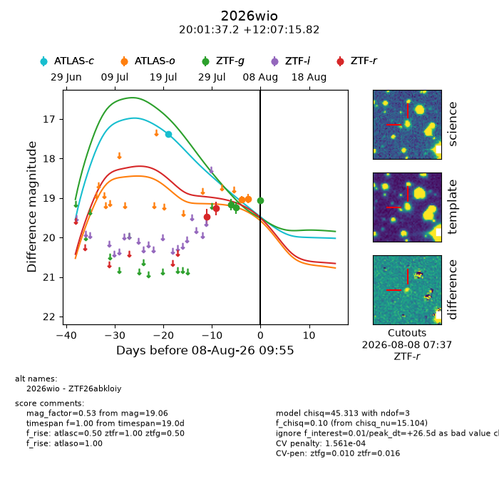
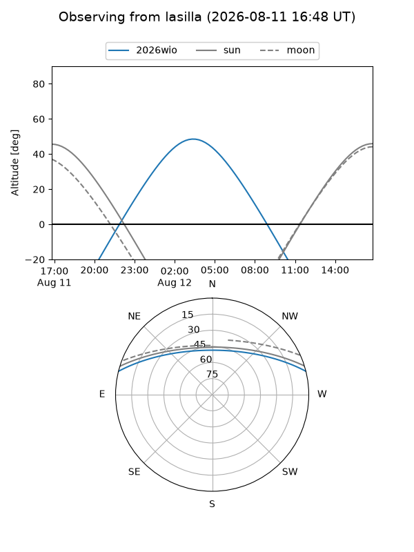
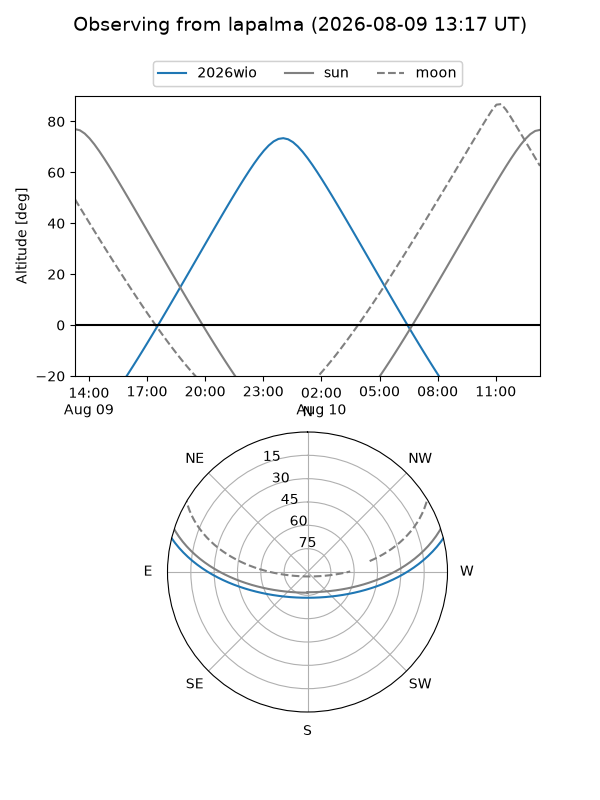
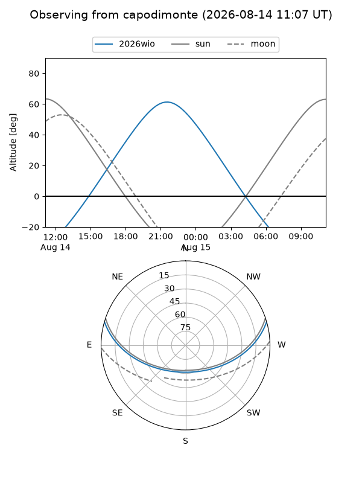
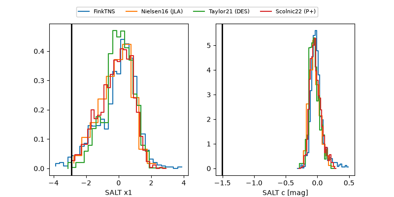

2026wio
Target 2026wio at 2026-08-08 09:57
Aliases and brokers:
FINK-ZTF: ztf.fink-portal.org/ZTF26abkloiy
Lasair-ZTF: lasair-ztf.lsst.ac.uk/objects/ZTF26abkloiy
ALeRCE-ZTF: alerce.online/object/ZTF26abkloiy
YSE-PZ: ziggy.ucolick.org/yse/transient_detail/2026wio
TNS name: wis-tns.org/object/2026wio
Direct TNS query: direct search
alt names
ZTF26abkloiy (ztf,fink_ztf)
2026wio (tns,yse)
Coordinates:
equatorial (ra, dec) = 300.4048,+12.12106
equatorial (HMS+DMS) = 20:01:37.15,+12:07:15.82
galactic (l, b) = (51.9476,-9.58834)
Flags:
TNS type: nan
peak dt: +26.5
likely cv: !!
Photometry:
last atlasc=17.39, atlaso=19.01, ztfg=19.06, ztfr=19.27
1 atlasc, 2 atlaso, 3 ztfg, 2 ztfr detections
Lightcurve

Visibility



Additional plots
